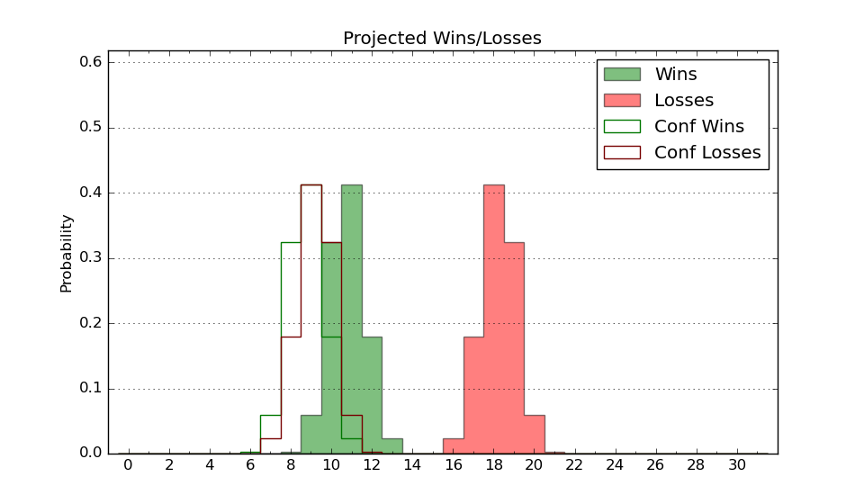

| Home | Game Probabilities | Conferences | Preseason Predictions | Odds Charts | NCAA Tournament |
| City: | Jackson, Mississippi | |
| Conference: | Southwest (8th)
| |
| Record: | 6-7 (Conf) 8-16 (Overall) | |
| Ratings: | Comp.: -9.1 (267th) Net: -9.1 (267th) Off: 91.2 (340th) Def: 100.3 (134th) SoR: 0.0 (171st) |
| Remaining | ||||||
|---|---|---|---|---|---|---|
| Date | Opponent | Win Prob | Pred. | |||
| 2/19 | @ Alcorn St. (270) | 35.9% | L 59-63 | |||
| 2/26 | @ Texas Southern (179) | 19.2% | L 54-64 | |||
| 2/28 | @ Prairie View A&M (288) | 40.3% | L 65-68 | |||
| 3/3 | Arkansas Pine Bluff (352) | 89.0% | W 70-57 | |||
| 3/5 | Mississippi Valley St. (356) | 92.9% | W 76-58 | |||
| Previous | Game Score | |||||
| Date | Opponent | Win Prob | Result | Off | Def | Net |
| 11/9 | @Illinois (14) | 1.7% | L 47-71 | -7.4 | 11.2 | 3.9 |
| 11/12 | @Louisiana Tech (102) | 9.2% | L 68-70 | 7.3 | 11.0 | 18.3 |
| 11/16 | @California Baptist (220) | 24.8% | L 64-77 | 11.0 | -18.1 | -7.1 |
| 11/21 | @Marshall (242) | 30.6% | L 66-80 | -0.5 | -10.7 | -11.2 |
| 11/23 | @Indiana (40) | 4.2% | L 35-70 | -20.1 | -1.0 | -21.2 |
| 11/27 | @Louisiana Lafayette (194) | 21.5% | W 75-70 | 17.0 | 5.6 | 22.5 |
| 11/30 | @Marquette (32) | 3.7% | L 54-83 | -9.9 | 2.6 | -7.3 |
| 12/4 | @Illinois St. (186) | 20.4% | W 61-55 | 1.7 | 25.7 | 27.4 |
| 12/12 | @Iowa St. (41) | 4.2% | L 37-47 | -14.6 | 25.8 | 11.3 |
| 12/14 | @Northern Iowa (107) | 9.9% | L 56-66 | 7.9 | -2.6 | 5.3 |
| 12/16 | @Drake (91) | 8.0% | L 65-70 | 10.2 | 8.6 | 18.8 |
| 1/5 | Alcorn St. (270) | 65.6% | L 50-65 | -16.5 | -11.2 | -27.7 |
| 1/8 | @Alabama St. (308) | 46.2% | L 57-72 | -8.8 | -14.9 | -23.7 |
| 1/10 | @Alabama A&M (337) | 58.3% | L 58-60 | -7.5 | 0.7 | -6.8 |
| 1/15 | Prairie View A&M (288) | 69.7% | W 75-64 | 23.4 | -8.8 | 14.5 |
| 1/17 | Texas Southern (179) | 44.7% | W 61-58 | 7.7 | 2.2 | 9.9 |
| 1/22 | @Bethune Cookman (333) | 56.4% | L 50-55 | -19.0 | 11.2 | -7.7 |
| 1/24 | @Florida A&M (315) | 48.6% | L 64-67 | 7.8 | -6.1 | 1.7 |
| 1/29 | Grambling St. (293) | 70.5% | L 64-73 | -9.4 | -10.2 | -19.5 |
| 1/31 | Southern (182) | 44.8% | L 64-75 | 5.9 | -22.8 | -16.9 |
| 2/5 | @Mississippi Valley St. (356) | 79.3% | W 69-65 | -6.2 | -3.6 | -9.7 |
| 2/7 | @Arkansas Pine Bluff (352) | 70.5% | W 60-47 | 7.6 | 12.9 | 20.5 |
| 2/12 | Florida A&M (315) | 76.3% | W 60-56 | 5.1 | -7.1 | -2.1 |
| 2/14 | Bethune Cookman (333) | 81.5% | W 71-51 | 23.3 | 0.1 | 23.4 |
| Stats & Trends | |||||
|---|---|---|---|---|---|
| Current | Day | Week | Month | Season | |
| Composite | -9.1 | +0.1 | +0.8 | -1.8 | -1.6 |
| Comp Rank | 267 | -- | +7 | -12 | +14 |
| Net Efficiency | -9.1 | +0.1 | +0.8 | -1.8 | -- |
| Net Rank | 267 | -- | +10 | -16 | -- |
| Off Efficiency | 91.2 | -0.1 | +0.8 | +0.8 | -- |
| Off Rank | 340 | -- | +6 | -6 | -- |
| Def Efficiency | 100.3 | +0.2 | -0.1 | -2.7 | -- |
| Def Rank | 134 | +2 | -- | -34 | -- |
| SoS Rank | 221 | +4 | -20 | -180 | -- |
| Exp. Wins | 10.8 | +0.0 | +0.3 | -1.7 | -1.7 |
| Exp. Conf Wins | 8.8 | +0.0 | +0.3 | -1.7 | -1.9 |
| Conf Champ Prob | 0.0 | -- | -- | -4.8 | -10.5 |

| Advanced Stats | ||
|---|---|---|
| Stat | Value | Rank |
| Off Eff FG % | 0.438 | 343 |
| Off Ast Ratio | 0.116 | 330 |
| Off ORB% | 0.290 | 141 |
| Off TO Rate | 0.171 | 230 |
| Off FT Ratio | 0.237 | 334 |
| Def Eff FG % | 0.492 | 145 |
| Def Ast Ratio | 0.143 | 199 |
| Def ORB% | 0.275 | 144 |
| Def TO Rate | 0.158 | 215 |
| Def FT Ratio | 0.394 | 329 |